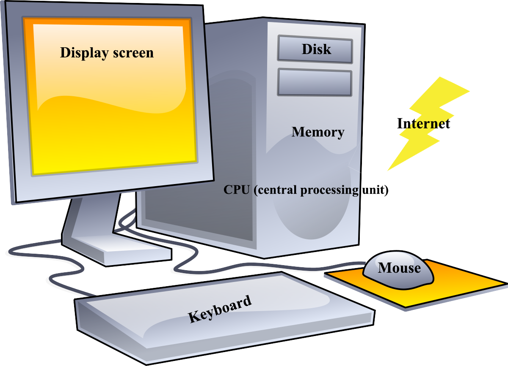
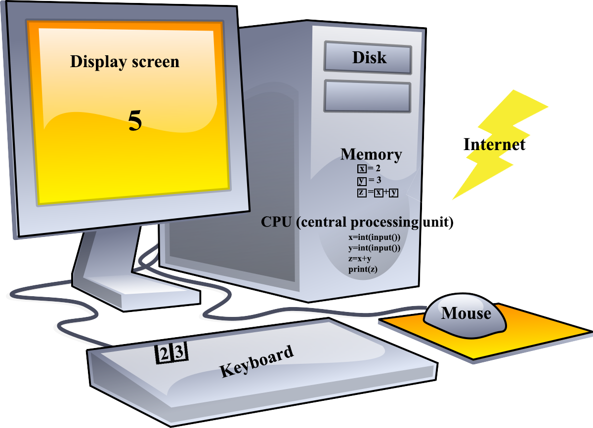

How the Computer Affects Programming
The relationship between hardware and software
You will find that the hardware of the computer itself determines the design of languages, such as Python. Consider a typical computer that you buy online.

You typically specify, the following components:
- CPU (central processing unit), which is the "brain" of the computer where the user’s commands are carried out
- Memory, which provides a place for the app to reside when it is active
- Disk or solid state drive for storing apps and their associated data when they are not active
- Keyboard, which is how the user of the app provides input
- Mouse, track pad, etc., that allows the user to navigate to buttons, links, and text input areas, and such, to enter data and issue commands
- Display screen, which is how the program displays results of the users command
- Access to the internet, via wireless (wifi) or a wired network, and so on, which requires additional hardware that we can take for granted (ignore) for now
There are often other choices buying a computer, such as a specialized CPU for handling graphics, called a GPU, and such. When you buy a computer, you typically balance the cost against the speed of the CPU, the amount of memory and disk space, keyboard and mouse/track pad features, and the size and quality (resolution) of the screen. Although the programmer must take this into account for some apps, especially games, initially you won’t need to concern yourself with the performance of your software on different hardware configurations.
If you are buying a cell phone, you will also see the hardware similarities. The phone has a CPU that affects the speed of apps running on it, memory for apps and more memory for disk-like capabilities for storing data like pictures, music, and such, a keyboard for input, a screen for output, which you can also touch to provide input and gestures, and of course access to the internet via wifi or cellular.
The reason to introduce the relationship between hardware and a computer language and an app you code with it, is to identify how the language interacts with the computer:
- Simplifying the discussion, the data your app uses must be in memory to be changed. For example, if your app adds 2+3, the values of 2 and 3 must be in memory. Python calls the places where data is stored variables in memory. The result of the addition must be in a variable as well, so you will actually need 3 variables to handle 2+3=5. Note that 2+3=5 is not valid Python, syntax, meaning that the language rules for writing the statement (instructions) have been violated.
- Once the data is in variables, the CPU can operate on it; typically, your app instructs the CPU to operate on variables by name, e.g. z=2+3, which is valid syntax. The 2 and 3 are constants in memory (a special kind of variable) and z is the kind of variable we just mentioned. After the CPU does it’s work, variable z contains the value 5.
- How do you know that z contains 5? The easiest way, is to display it on the screen, which is accomplished by using the print statement: print (z)
-
Back to variables for a moment. To make your app more robust, you will want to generalize the way it handles data. For example, if you want to handle addition of any 2 numbers, your statement, might be z=x+y instead of z=2+3, so we can assign x=2 and y=3. The equals sign (=) is the assignment operator and works the same as it does in z=2+3; thus, you can write
x=2
y=3
z=x+y
print(z)
-
Using the keyboard, though, enables user input and allows the user to specify values for the variables:
x=int(input())
y=int(input())
z=x+y
print(z)

There are a couple of syntax items not yet mentioned: input() and print() are built-in functions in Python. A function is a series of statements that perform an action. You won’t need to know the messy details of how to interact with the hardware to print or accept input because you can use the built-in function instead. The int() statement is also a function that takes the returned value, of input() in this case, and converts it to a number (integer)–data types like integer and string will be discussed in much more detail.
Assignment
- Take the examples in this section and add them to your HelloWorld project. (See Starting Code below.) Remember, in Python, indentation of code is very important so you need to start with the code below and keep your code aligned in a block. (See Python Syntax for Python Indentation information.)
- Review the Python Variable tutorial at w3schools.com and experiment. Don’t worry about the things that haven’t been introduced yet.
- Extra credit: Review the Python User Input tutorial. Improve the program so the user knows which value s/he is entering.
Submit a screen shot of your IDE after you run your code and answer the following questions:
- What part of the computer must an instruction be in before it can be executed?
- What part of the computer must a variable be stored before it can be accessed by the CPU?
- What is the difference between a variable and a value?
- What does the assignment operator do?
- What is a constant?
Starting Code
if __name__ == "__main__":
print("Hello World!")
# your code goes here